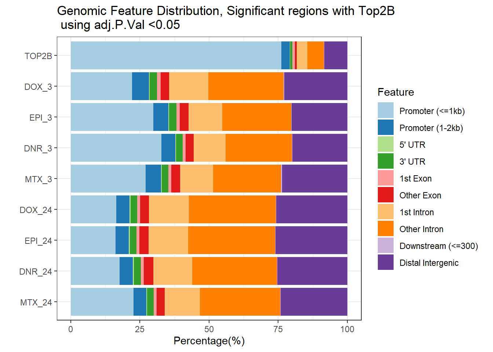
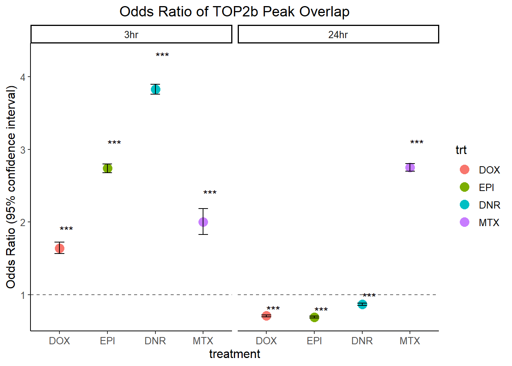
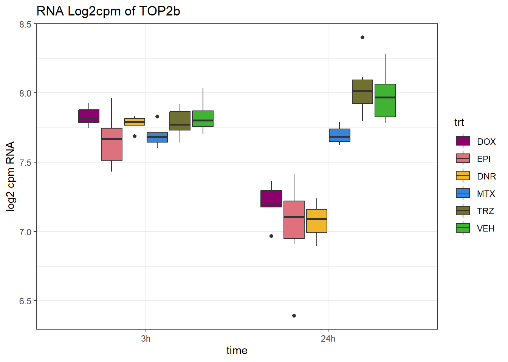
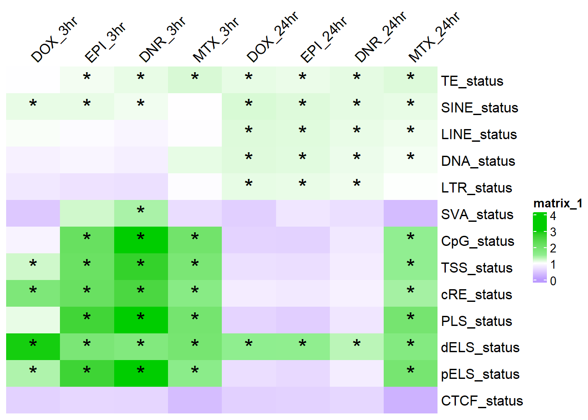

Figure 3
ERM
2025-08-18
Last updated: 2025-08-18
Checks: 7 0
Knit directory: ATAC_learning/
This reproducible R Markdown analysis was created with workflowr (version 1.7.1). The Checks tab describes the reproducibility checks that were applied when the results were created. The Past versions tab lists the development history.
Great! Since the R Markdown file has been committed to the Git repository, you know the exact version of the code that produced these results.
Great job! The global environment was empty. Objects defined in the global environment can affect the analysis in your R Markdown file in unknown ways. For reproduciblity it’s best to always run the code in an empty environment.
The command set.seed(20231016) was run prior to running
the code in the R Markdown file. Setting a seed ensures that any results
that rely on randomness, e.g. subsampling or permutations, are
reproducible.
Great job! Recording the operating system, R version, and package versions is critical for reproducibility.
Nice! There were no cached chunks for this analysis, so you can be confident that you successfully produced the results during this run.
Great job! Using relative paths to the files within your workflowr project makes it easier to run your code on other machines.
Great! You are using Git for version control. Tracking code development and connecting the code version to the results is critical for reproducibility.
The results in this page were generated with repository version ea72823. See the Past versions tab to see a history of the changes made to the R Markdown and HTML files.
Note that you need to be careful to ensure that all relevant files for
the analysis have been committed to Git prior to generating the results
(you can use wflow_publish or
wflow_git_commit). workflowr only checks the R Markdown
file, but you know if there are other scripts or data files that it
depends on. Below is the status of the Git repository when the results
were generated:
Ignored files:
Ignored: .RData
Ignored: .Rhistory
Ignored: .Rproj.user/
Ignored: analysis/H3K27ac_integration_noM.Rmd
Ignored: data/ACresp_SNP_table.csv
Ignored: data/ARR_SNP_table.csv
Ignored: data/All_merged_peaks.tsv
Ignored: data/CAD_gwas_dataframe.RDS
Ignored: data/CTX_SNP_table.csv
Ignored: data/Collapsed_expressed_NG_peak_table.csv
Ignored: data/DEG_toplist_sep_n45.RDS
Ignored: data/FRiP_first_run.txt
Ignored: data/Final_four_data/
Ignored: data/Frip_1_reads.csv
Ignored: data/Frip_2_reads.csv
Ignored: data/Frip_3_reads.csv
Ignored: data/Frip_4_reads.csv
Ignored: data/Frip_5_reads.csv
Ignored: data/Frip_6_reads.csv
Ignored: data/GO_KEGG_analysis/
Ignored: data/HF_SNP_table.csv
Ignored: data/Ind1_75DA24h_dedup_peaks.csv
Ignored: data/Ind1_TSS_peaks.RDS
Ignored: data/Ind1_firstfragment_files.txt
Ignored: data/Ind1_fragment_files.txt
Ignored: data/Ind1_peaks_list.RDS
Ignored: data/Ind1_summary.txt
Ignored: data/Ind2_TSS_peaks.RDS
Ignored: data/Ind2_fragment_files.txt
Ignored: data/Ind2_peaks_list.RDS
Ignored: data/Ind2_summary.txt
Ignored: data/Ind3_TSS_peaks.RDS
Ignored: data/Ind3_fragment_files.txt
Ignored: data/Ind3_peaks_list.RDS
Ignored: data/Ind3_summary.txt
Ignored: data/Ind4_79B24h_dedup_peaks.csv
Ignored: data/Ind4_TSS_peaks.RDS
Ignored: data/Ind4_V24h_fraglength.txt
Ignored: data/Ind4_fragment_files.txt
Ignored: data/Ind4_fragment_filesN.txt
Ignored: data/Ind4_peaks_list.RDS
Ignored: data/Ind4_summary.txt
Ignored: data/Ind5_TSS_peaks.RDS
Ignored: data/Ind5_fragment_files.txt
Ignored: data/Ind5_fragment_filesN.txt
Ignored: data/Ind5_peaks_list.RDS
Ignored: data/Ind5_summary.txt
Ignored: data/Ind6_TSS_peaks.RDS
Ignored: data/Ind6_fragment_files.txt
Ignored: data/Ind6_peaks_list.RDS
Ignored: data/Ind6_summary.txt
Ignored: data/Knowles_4.RDS
Ignored: data/Knowles_5.RDS
Ignored: data/Knowles_6.RDS
Ignored: data/LiSiLTDNRe_TE_df.RDS
Ignored: data/MI_gwas.RDS
Ignored: data/SNP_GWAS_PEAK_MRC_id
Ignored: data/SNP_GWAS_PEAK_MRC_id.csv
Ignored: data/SNP_gene_cat_list.tsv
Ignored: data/SNP_supp_schneider.RDS
Ignored: data/TE_info/
Ignored: data/TFmapnames.RDS
Ignored: data/all_TSSE_scores.RDS
Ignored: data/all_four_filtered_counts.txt
Ignored: data/aln_run1_results.txt
Ignored: data/anno_ind1_DA24h.RDS
Ignored: data/anno_ind4_V24h.RDS
Ignored: data/annotated_gwas_SNPS.csv
Ignored: data/background_n45_he_peaks.RDS
Ignored: data/cardiac_muscle_FRIP.csv
Ignored: data/cardiomyocyte_FRIP.csv
Ignored: data/col_ng_peak.csv
Ignored: data/cormotif_full_4_run.RDS
Ignored: data/cormotif_full_4_run_he.RDS
Ignored: data/cormotif_full_6_run.RDS
Ignored: data/cormotif_full_6_run_he.RDS
Ignored: data/cormotif_probability_45_list.csv
Ignored: data/cormotif_probability_45_list_he.csv
Ignored: data/cormotif_probability_all_6_list.csv
Ignored: data/cormotif_probability_all_6_list_he.csv
Ignored: data/datasave.RDS
Ignored: data/embryo_heart_FRIP.csv
Ignored: data/enhancer_list_ENCFF126UHK.bed
Ignored: data/enhancerdata/
Ignored: data/filt_Peaks_efit2.RDS
Ignored: data/filt_Peaks_efit2_bl.RDS
Ignored: data/filt_Peaks_efit2_n45.RDS
Ignored: data/first_Peaksummarycounts.csv
Ignored: data/first_run_frag_counts.txt
Ignored: data/full_bedfiles/
Ignored: data/gene_ref.csv
Ignored: data/gwas_1_dataframe.RDS
Ignored: data/gwas_2_dataframe.RDS
Ignored: data/gwas_3_dataframe.RDS
Ignored: data/gwas_4_dataframe.RDS
Ignored: data/gwas_5_dataframe.RDS
Ignored: data/high_conf_peak_counts.csv
Ignored: data/high_conf_peak_counts.txt
Ignored: data/high_conf_peaks_bl_counts.txt
Ignored: data/high_conf_peaks_counts.txt
Ignored: data/hits_files/
Ignored: data/hyper_files/
Ignored: data/hypo_files/
Ignored: data/ind1_DA24hpeaks.RDS
Ignored: data/ind1_TSSE.RDS
Ignored: data/ind2_TSSE.RDS
Ignored: data/ind3_TSSE.RDS
Ignored: data/ind4_TSSE.RDS
Ignored: data/ind4_V24hpeaks.RDS
Ignored: data/ind5_TSSE.RDS
Ignored: data/ind6_TSSE.RDS
Ignored: data/initial_complete_stats_run1.txt
Ignored: data/left_ventricle_FRIP.csv
Ignored: data/median_24_lfc.RDS
Ignored: data/median_3_lfc.RDS
Ignored: data/mergedPeads.gff
Ignored: data/mergedPeaks.gff
Ignored: data/motif_list_full
Ignored: data/motif_list_n45
Ignored: data/motif_list_n45.RDS
Ignored: data/multiqc_fastqc_run1.txt
Ignored: data/multiqc_fastqc_run2.txt
Ignored: data/multiqc_genestat_run1.txt
Ignored: data/multiqc_genestat_run2.txt
Ignored: data/my_hc_filt_counts.RDS
Ignored: data/my_hc_filt_counts_n45.RDS
Ignored: data/n45_bedfiles/
Ignored: data/n45_files
Ignored: data/other_papers/
Ignored: data/peakAnnoList_1.RDS
Ignored: data/peakAnnoList_2.RDS
Ignored: data/peakAnnoList_24_full.RDS
Ignored: data/peakAnnoList_24_n45.RDS
Ignored: data/peakAnnoList_3.RDS
Ignored: data/peakAnnoList_3_full.RDS
Ignored: data/peakAnnoList_3_n45.RDS
Ignored: data/peakAnnoList_4.RDS
Ignored: data/peakAnnoList_5.RDS
Ignored: data/peakAnnoList_6.RDS
Ignored: data/peakAnnoList_Eight.RDS
Ignored: data/peakAnnoList_full_motif.RDS
Ignored: data/peakAnnoList_n45_motif.RDS
Ignored: data/siglist_full.RDS
Ignored: data/siglist_n45.RDS
Ignored: data/summarized_peaks_dataframe.txt
Ignored: data/summary_peakIDandReHeat.csv
Ignored: data/test.list.RDS
Ignored: data/testnames.txt
Ignored: data/toplist_6.RDS
Ignored: data/toplist_full.RDS
Ignored: data/toplist_full_DAR_6.RDS
Ignored: data/toplist_n45.RDS
Ignored: data/trimmed_seq_length.csv
Ignored: data/unclassified_full_set_peaks.RDS
Ignored: data/unclassified_n45_set_peaks.RDS
Ignored: data/xstreme/
Untracked files:
Untracked: RNA_seq_integration.Rmd
Untracked: Rplot.pdf
Untracked: Sig_meta
Untracked: analysis/.gitignore
Untracked: analysis/Cormotif_analysis_testing diff.Rmd
Untracked: analysis/Diagnosis-tmm.Rmd
Untracked: analysis/Expressed_RNA_associations.Rmd
Untracked: analysis/IF_counts_20x.Rmd
Untracked: analysis/LFC_corr.Rmd
Untracked: analysis/SVA.Rmd
Untracked: analysis/Tan2020.Rmd
Untracked: analysis/making_master_peaks_list.Rmd
Untracked: analysis/my_hc_filt_counts.csv
Untracked: code/Concatenations_for_export.R
Untracked: code/IGV_snapshot_code.R
Untracked: code/LongDARlist.R
Untracked: code/just_for_Fun.R
Untracked: my_plot.pdf
Untracked: my_plot.png
Untracked: output/cormotif_probability_45_list.csv
Untracked: output/cormotif_probability_all_6_list.csv
Untracked: setup.RData
Unstaged changes:
Modified: ATAC_learning.Rproj
Modified: analysis/AC_shared_analysis.Rmd
Modified: analysis/AF_HF_SNPs.Rmd
Modified: analysis/Cardiotox_SNPs.Rmd
Modified: analysis/Cormotif_analysis.Rmd
Modified: analysis/DEG_analysis.Rmd
Modified: analysis/DOX_DAR_heatmap.Rmd
Modified: analysis/H3K27ac_integration.Rmd
Modified: analysis/Jaspar_motif.Rmd
Modified: analysis/Jaspar_motif_ff.Rmd
Modified: analysis/SNP_TAD_peaks.Rmd
Modified: analysis/Supp_Fig_12-19.Rmd
Modified: analysis/TE_analysis_ALL_DAR.Rmd
Modified: analysis/TE_analysis_norm.Rmd
Modified: analysis/final_four_analysis.Rmd
Note that any generated files, e.g. HTML, png, CSS, etc., are not included in this status report because it is ok for generated content to have uncommitted changes.
These are the previous versions of the repository in which changes were
made to the R Markdown (analysis/Figure_3.Rmd) and HTML
(docs/Figure_3.html) files. If you’ve configured a remote
Git repository (see ?wflow_git_remote), click on the
hyperlinks in the table below to view the files as they were in that
past version.
| File | Version | Author | Date | Message |
|---|---|---|---|---|
| html | c9ab35b | reneeisnowhere | 2025-08-07 | Build site. |
| Rmd | 42d8279 | reneeisnowhere | 2025-08-07 | wflow_publish("analysis/Figure_3.Rmd") |
| html | e077582 | reneeisnowhere | 2025-08-07 | Build site. |
| Rmd | 4643705 | reneeisnowhere | 2025-08-07 | wflow_publish("analysis/Figure_3.Rmd") |
| Rmd | 06ff084 | reneeisnowhere | 2025-08-07 | first recommit |
| html | a197856 | reneeisnowhere | 2025-05-01 | Build site. |
| html | 18684b9 | reneeisnowhere | 2025-04-02 | Build site. |
| html | 5d30139 | E. Renee Matthews | 2025-02-24 | Build site. |
| html | df8f6ef | E. Renee Matthews | 2025-02-24 | Build site. |
| Rmd | 24b7203 | E. Renee Matthews | 2025-02-24 | taking out a leftover data frame, adding in image |
| html | d4442e0 | E. Renee Matthews | 2025-02-24 | Build site. |
| Rmd | be96ed5 | E. Renee Matthews | 2025-02-24 | first commit |
| Rmd | 8c12c80 | E. Renee Matthews | 2025-02-24 | first commit |
packages
library(tidyverse)
library(cowplot)
library(kableExtra)
library(broom)
library(RColorBrewer)
library(ChIPseeker)
library("TxDb.Hsapiens.UCSC.hg38.knownGene")
library("org.Hs.eg.db")
library(rtracklayer)
library(edgeR)
library(ggfortify)
library(limma)
library(readr)
library(BiocGenerics)
library(gridExtra)
library(VennDiagram)
library(scales)
library(Cormotif)
library(BiocParallel)
library(ggpubr)
library(devtools)
library(BSgenome.Hsapiens.UCSC.hg38)
library(data.table)
library(eulerr)
library(plyranges)Figure 3: Early drug-dependent responsive chromatin regions are enriched in TOP2B-bound regions near transcription start sites.
knitr::include_graphics("assets/Figure\ 3.png", error=FALSE)
knitr::include_graphics("docs/assets/Figure\ 3.png",error = FALSE)
Figure 3.A. TOP2B ChIP-seq track alongside VEH treated ATAC-seq tracks at a known heart gene
**see image above.
Figure 3.B. Gene feature distribution across DARs
link to how ChipSeeker was used to create this plot
(may need to scroll down further on link above to see the code and notes)
# Top2b_peaks <- import(con="data/other_papers/ChIP3_TOP2B_CM_87-1.bed",format = "bed",genome="hg38")
filt_peakAnnoList_Top2b_DAR <- readRDS("data/Final_four_data/re_analysis/filt_Top2B_DAR_annotated_peaks_chipannno.RDS")
ChIPseeker::plotAnnoBar(filt_peakAnnoList_Top2b_DAR[c(10,4,6,2,8,3,5,1,7)])+
ggtitle ("Genomic Feature Distribution, Significant regions with Top2B \n using adj.P.Val <0.05")
| Version | Author | Date |
|---|---|---|
| e077582 | reneeisnowhere | 2025-08-07 |
Figure 3.C. Overlap of Accessible regions and TOP2B regions
Top2b_peaks <- import(con="data/other_papers/ChIP3_TOP2B_CM_87-1.bed",format = "bed",genome="hg38")
Motif_list_gr <- readRDS( "data/Final_four_data/re_analysis/Motif_list_granges.RDS")
list2env(Motif_list_gr[10],envir = .GlobalEnv)<environment: R_GlobalEnv>top2b_overlap <- join_overlap_inner(all_regions,Top2b_peaks)
AR_total <- length(unique(all_regions$Peakid))
Top2B_total <- length(unique(Top2b_peaks$name))
overlap_n <- length(unique(top2b_overlap$Peakid))
fit_top2b <- euler(c(
"ARs" = AR_total-overlap_n,
"Top2B" = Top2B_total-length(unique(top2b_overlap$name)),
"ARs&Top2B" = overlap_n
))
plot(fit_top2b, fills = list(fill = c("skyblue", "lightcoral"), alpha = 0.6),
labels = FALSE, edges = TRUE, quantities = TRUE,
main = "Overlap between AR and TOP2B peaks")
| Version | Author | Date |
|---|---|---|
| e077582 | reneeisnowhere | 2025-08-07 |
Figure 3.D. Enrichment of TOP2B regions in DARs
Allregion_ol <- join_overlap_intersect(all_regions,Top2b_peaks)%>%
as.data.frame() %>%
distinct(Peakid,.keep_all = TRUE)
toptable_results <- readRDS("data/Final_four_data/re_analysis/Toptable_results.RDS")
all_results <- toptable_results %>%
imap(~ .x %>% tibble::rownames_to_column(var = "rowname") %>%
mutate(source = .y)) %>%
bind_rows()
annotated_DARs<- readRDS("data/Final_four_data/re_analysis/DOX_DAR_annotated_peaks_chipannno.RDS")
gene_N_peak <-
annotated_DARs$DOX_3 %>%
as.data.frame() %>%
dplyr::select(mcols.genes,annotation, geneId:distanceToTSS)my_DOX_data <- all_results %>%
dplyr::filter(source=="DOX_3"|source=="DOX_24") %>%
dplyr::select(source,genes,logFC,adj.P.Val) %>%
pivot_wider(.,id_cols=genes,names_from = source, values_from = c(logFC, adj.P.Val))
my_EPI_data <- all_results %>%
dplyr::filter(source=="EPI_3"|source=="EPI_24") %>%
dplyr::select(source,genes,logFC,adj.P.Val) %>%
pivot_wider(.,id_cols=genes,names_from = source, values_from = c(logFC, adj.P.Val))
my_DNR_data <- all_results %>%
dplyr::filter(source=="DNR_3"|source=="DNR_24") %>%
dplyr::select(source,genes,logFC,adj.P.Val) %>%
pivot_wider(.,id_cols=genes,names_from = source, values_from = c(logFC, adj.P.Val))
my_MTX_data <- all_results %>%
dplyr::filter(source=="MTX_3"|source=="MTX_24") %>%
dplyr::select(source,genes,logFC,adj.P.Val) %>%
pivot_wider(.,id_cols=genes,names_from = source, values_from = c(logFC, adj.P.Val))Making the annotation dataframe to create 2x2 matrices
TSS_listed_df <- all_results %>%
mutate(top_2b_ol=case_when(genes %in% Allregion_ol$Peakid~"TOP2b_peak",
TRUE ~"not_TOP2b_peak")) %>%
left_join(.,my_DOX_data,by=c("genes"="genes")) %>%
mutate(DOX_sig_3=if_else(adj.P.Val_DOX_3<0.05,"sig","not_sig"),
DOX_sig_24=if_else(adj.P.Val_DOX_24<0.05,"sig","not_sig")) %>%
mutate(DOX_sig_3=factor(DOX_sig_3,levels=c("sig","not_sig")),
DOX_sig_24=factor(DOX_sig_24,levels=c("sig","not_sig"))) %>%
left_join(.,my_EPI_data,by=c("genes"="genes")) %>%
mutate(EPI_sig_3=if_else(adj.P.Val_EPI_3<0.05,"sig","not_sig"),
EPI_sig_24=if_else(adj.P.Val_EPI_24<0.05,"sig","not_sig")) %>%
mutate(EPI_sig_3=factor(EPI_sig_3,levels=c("sig","not_sig")),
EPI_sig_24=factor(EPI_sig_24,levels=c("sig","not_sig"))) %>%
left_join(.,my_DNR_data,by=c("genes"="genes")) %>%
mutate(DNR_sig_3=if_else(adj.P.Val_DNR_3<0.05,"sig","not_sig"),
DNR_sig_24=if_else(adj.P.Val_DNR_24<0.05,"sig","not_sig")) %>%
mutate(DNR_sig_3=factor(DNR_sig_3,levels=c("sig","not_sig")),
DNR_sig_24=factor(DNR_sig_24,levels=c("sig","not_sig"))) %>%
left_join(.,my_MTX_data,by=c("genes"="genes")) %>%
mutate(MTX_sig_3=if_else(adj.P.Val_MTX_3<0.05,"sig","not_sig"),
MTX_sig_24=if_else(adj.P.Val_MTX_24<0.05,"sig","not_sig")) %>%
mutate(MTX_sig_3=factor(MTX_sig_3,levels=c("sig","not_sig")),
MTX_sig_24=factor(MTX_sig_24,levels=c("sig","not_sig"))) %>%
left_join(., gene_N_peak, by= c("genes"="mcols.genes"))make the odds ratio dataframe
DOX_top2b_3hr_or <-
TSS_listed_df %>%
group_by(DOX_sig_3,top_2b_ol) %>%
tally %>%
pivot_wider(., id_cols=DOX_sig_3, names_from = top_2b_ol, values_from = n) %>% column_to_rownames("DOX_sig_3") %>%
as.matrix() %>%
fisher.test(.)
DOX_top2b_24hr_or <- TSS_listed_df %>%
group_by(DOX_sig_24,top_2b_ol) %>%
tally %>%
pivot_wider(., id_cols=DOX_sig_24, names_from = top_2b_ol, values_from = n) %>%
column_to_rownames("DOX_sig_24") %>%
as.matrix() %>%
fisher.test(.)
EPI_top2b_3hr_or <-
TSS_listed_df %>%
group_by(EPI_sig_3,top_2b_ol) %>%
tally %>%
pivot_wider(., id_cols=EPI_sig_3, names_from = top_2b_ol, values_from = n) %>% column_to_rownames("EPI_sig_3") %>%
as.matrix() %>%
fisher.test(.)
EPI_top2b_24hr_or <- TSS_listed_df %>%
group_by(EPI_sig_24,top_2b_ol) %>%
tally %>%
pivot_wider(., id_cols=EPI_sig_24, names_from = top_2b_ol, values_from = n) %>%
column_to_rownames("EPI_sig_24") %>%
as.matrix() %>%
fisher.test(.)
DNR_top2b_3hr_or <-
TSS_listed_df %>%
group_by(DNR_sig_3,top_2b_ol) %>%
tally %>%
pivot_wider(., id_cols=DNR_sig_3, names_from = top_2b_ol, values_from = n) %>% column_to_rownames("DNR_sig_3") %>%
as.matrix() %>%
fisher.test(.)
DNR_top2b_24hr_or <- TSS_listed_df %>%
group_by(DNR_sig_24,top_2b_ol) %>%
tally %>%
pivot_wider(., id_cols=DNR_sig_24, names_from = top_2b_ol, values_from = n) %>%
column_to_rownames("DNR_sig_24") %>%
as.matrix() %>%
fisher.test(.)
MTX_top2b_3hr_or <-
TSS_listed_df %>%
group_by(MTX_sig_3,top_2b_ol) %>%
tally %>%
pivot_wider(., id_cols=MTX_sig_3, names_from = top_2b_ol, values_from = n) %>% column_to_rownames("MTX_sig_3") %>%
as.matrix() %>%
fisher.test(.)
MTX_top2b_24hr_or <- TSS_listed_df %>%
group_by(MTX_sig_24,top_2b_ol) %>%
tally %>%
pivot_wider(., id_cols=MTX_sig_24, names_from = top_2b_ol, values_from = n) %>%
column_to_rownames("MTX_sig_24") %>%
as.matrix() %>%
fisher.test(.)# Define the variable names
var_names <- c("DOX_top2b_3hr_or", "DOX_top2b_24hr_or",
"EPI_top2b_3hr_or", "EPI_top2b_24hr_or",
"DNR_top2b_3hr_or", "DNR_top2b_24hr_or",
"MTX_top2b_3hr_or", "MTX_top2b_24hr_or")
# Optional: label for grouping
group_labels <- c("DOX_3hr", "DOX_24hr", "EPI_3hr", "EPI_24hr", "DNR_3hr", "DNR_24hr", "MTX_3hr", "MTX_24hr")
# Build the data frame
OR_all_trt_result_df <- do.call(rbind, lapply(seq_along(var_names), function(i) {
var <- get(var_names[i])
data.frame(
or_value = unname(var$estimate), # remove the name "odds ratio"
lower_ci = var$conf.int[1],
upper_ci = var$conf.int[2],
p_value = var$p.value,
group = group_labels[i]
)
}))OR_all_trt_result_df %>%
separate_wider_delim(.,cols="group", names = c("trt","time"), delim = "_",cols_remove = FALSE) %>%
mutate(time= factor(time, levels =c("3hr","24hr")),
trt=factor(trt, levels= c("DOX", "EPI", "DNR", "MTX"))) %>%
# mutate(significant=if_else(p_value <0.05,"TRUE","FALSE")) %>%
mutate(
significant = case_when(
p_value < 0.001 ~ "***",
p_value < 0.01 ~ "**",
p_value < 0.05 ~ "*",
TRUE ~ ""
)
) %>%
ggplot(., aes(x = trt, y = or_value)) +
geom_point(aes(color = trt), size=4)+
geom_errorbar(aes(ymin = lower_ci, ymax = upper_ci), width = 0.2) +
geom_hline(yintercept = 1, linetype = "dashed", color = "gray40") +
geom_text(
aes(y = upper_ci + 0.1 * or_value, label = significant),
hjust = 0, # aligns text to the left of the y point
size = 4,
color = "black"
)+
labs(
title = "Odds Ratio of TOP2b Peak Overlap",
y = "Odds Ratio (95% confidence interval)",
x = "treatment"
) +
# coord_flip()+
theme_classic() +
facet_wrap(~time)+
theme(
text = element_text(size = 12),
plot.title = element_text(hjust = 0.5)
)
| Version | Author | Date |
|---|---|---|
| e077582 | reneeisnowhere | 2025-08-07 |
Figure 3.E. TOP2B RNA expression
(Uses log2cpm values from my previous paper (Matthews, et al. PLOS genet. 2024))
drug_pal <- c("#8B006D","#DF707E","#F1B72B", "#3386DD","#707031","#41B333")
RNA_counts <- readRDS("data/other_papers/cpmcount.RDS") %>%
dplyr::rename_with(.,~gsub(pattern="Da",replacement="DNR",.)) %>%
dplyr::rename_with(.,~gsub(pattern="Do",replacement="DOX",.)) %>%
dplyr::rename_with(.,~gsub(pattern="Ep",replacement="EPI",.)) %>%
dplyr::rename_with(.,~gsub(pattern="Mi",replacement="MTX",.)) %>%
dplyr::rename_with(.,~gsub(pattern="Tr",replacement="TRZ",.)) %>%
dplyr::rename_with(.,~gsub(pattern="Ve",replacement="VEH",.)) %>%
rownames_to_column("ENTREZID")
RNA_counts %>%
dplyr::filter(ENTREZID =="7155") %>%
pivot_longer(cols = !ENTREZID, names_to = "sample", values_to = "counts") %>%
separate("sample", into = c("trt","ind","time")) %>%
mutate(time=factor(time, levels = c("3h","24h"))) %>%
mutate(trt=factor(trt, levels= c("DOX","EPI","DNR","MTX","TRZ","VEH"))) %>%
ggplot(., aes (x = time, y=counts))+
geom_boxplot(aes(fill=trt))+
# facet_wrap(~SYMBOL, scales="free_y")+
scale_fill_manual(values = drug_pal)+
ggtitle("RNA Log2cpm of TOP2b")+
theme_bw()+
ylab("log2 cpm RNA")
| Version | Author | Date |
|---|---|---|
| e077582 | reneeisnowhere | 2025-08-07 |
Figure 3.F. Enrichment of sequence features in DARs
For direct links in how all numbers were derived:
Analysis of TSS and CpG islands enrichment
Enrichment of cis Regulatory Elements
library(tidyverse)
library(ComplexHeatmap)
library(circlize)top_df <- readRDS("data/Final_four_data/re_analysis/OR_results_TE_df_1bp_alltrt.RDS")
mid_df <- readRDS("data/Final_four_data/re_analysis/OR_results_TSS_CpG_df_1bp_alltrt.RDS")
bot_df <- readRDS("data/Final_four_data/re_analysis/OR_results_cREs_df_1bp_alltrt.RDS")results_order <- top_df %>%
bind_rows(mid_df) %>%
bind_rows(bot_df) %>%
mutate(status=factor(status,
levels=c("TE_status",
"SINE_status",
"LINE_status",
"DNA_status","LTR_status",
"SVA_status","CpG_status",
"TSS_status","cRE_status",
"PLS_status","dELS_status","pELS_status",
"CTCF_status"))) %>%
arrange(status) %>%
group_by(source) %>%
mutate(rank_val=rank(chi_sq_p, ties.method = "first")) %>%
mutate(BH_correction= p.adjust(chi_sq_p,method= "BH")) %>%
mutate(sig=chi_sq_p<BH_correction) %>%
mutate(source=factor(source,levels = c("DOX_3hr", "EPI_3hr",
"DNR_3hr","MTX_3hr",
"DOX_24hr","EPI_24hr",
"DNR_24hr","MTX_24hr")))
critical_value <- max(results_order$chi_sq_p[results_order$sig])
col_fun_OR = colorRamp2(c(0,1,1.5,3,4), c("#BC9BFF","white","lightgreen","green3","green3" ))
sig_mat_OR <-
results_order %>%
as.data.frame() %>%
dplyr::select( status,source,BH_correction) %>%
arrange(status) %>%
pivot_wider(., id_cols = status, names_from = source, values_from = BH_correction) %>%
# dplyr::select(Matrix_Name,EAR_open,ESR_open,LR_open,ESR_opcl,EAR_close,ESR_close,LR_close,ESR_clop) %>%
column_to_rownames("status") %>%
as.matrix()
results_mat <- results_order %>%
as.data.frame() %>%
dplyr::select( status,source,odds_ratio) %>%
arrange(status) %>%
pivot_wider(., id_cols = status, names_from = source, values_from = odds_ratio) %>%
# dplyr::select(status,EAR_open,ESR_open,LR_open,ESR_opcl,EAR_close,ESR_close,LR_close,ESR_clop) %>%
column_to_rownames("status") %>%
as.matrix()ComplexHeatmap::Heatmap(results_mat ,col = col_fun_OR,
cluster_rows=FALSE,
cluster_columns=FALSE,
column_names_side = "top",
column_names_rot = 45,
column_order=c("DOX_3hr","EPI_3hr","DNR_3hr","MTX_3hr","DOX_24hr","EPI_24hr","DNR_24hr","MTX_24hr"),
# na_col = "black",
cell_fun = function(j, i, x, y, width, height, fill) {
if (!is.na(sig_mat_OR[i, j]) && sig_mat_OR[i, j] <0.05 && results_mat[i, j] > 1) {
grid.text("*", x, y, gp = gpar(fontsize = 20)) # Add star if significant
} })
fig.path you set was
ignored by workflowr.
sessionInfo()R version 4.4.2 (2024-10-31 ucrt)
Platform: x86_64-w64-mingw32/x64
Running under: Windows 11 x64 (build 26100)
Matrix products: default
locale:
[1] LC_COLLATE=English_United States.utf8
[2] LC_CTYPE=English_United States.utf8
[3] LC_MONETARY=English_United States.utf8
[4] LC_NUMERIC=C
[5] LC_TIME=English_United States.utf8
time zone: America/Chicago
tzcode source: internal
attached base packages:
[1] grid stats4 stats graphics grDevices utils datasets
[8] methods base
other attached packages:
[1] circlize_0.4.16
[2] ComplexHeatmap_2.22.0
[3] plyranges_1.26.0
[4] eulerr_7.0.2
[5] data.table_1.17.8
[6] BSgenome.Hsapiens.UCSC.hg38_1.4.5
[7] BSgenome_1.74.0
[8] BiocIO_1.16.0
[9] Biostrings_2.74.1
[10] XVector_0.46.0
[11] devtools_2.4.5
[12] usethis_3.1.0
[13] ggpubr_0.6.1
[14] BiocParallel_1.40.2
[15] Cormotif_1.52.0
[16] affy_1.84.0
[17] scales_1.4.0
[18] VennDiagram_1.7.3
[19] futile.logger_1.4.3
[20] gridExtra_2.3
[21] ggfortify_0.4.19
[22] edgeR_4.4.2
[23] limma_3.62.2
[24] rtracklayer_1.66.0
[25] org.Hs.eg.db_3.20.0
[26] TxDb.Hsapiens.UCSC.hg38.knownGene_3.20.0
[27] GenomicFeatures_1.58.0
[28] AnnotationDbi_1.68.0
[29] Biobase_2.66.0
[30] GenomicRanges_1.58.0
[31] GenomeInfoDb_1.42.3
[32] IRanges_2.40.1
[33] S4Vectors_0.44.0
[34] BiocGenerics_0.52.0
[35] ChIPseeker_1.42.1
[36] RColorBrewer_1.1-3
[37] broom_1.0.9
[38] kableExtra_1.4.0
[39] cowplot_1.2.0
[40] lubridate_1.9.4
[41] forcats_1.0.0
[42] stringr_1.5.1
[43] dplyr_1.1.4
[44] purrr_1.1.0
[45] readr_2.1.5
[46] tidyr_1.3.1
[47] tibble_3.3.0
[48] ggplot2_3.5.2
[49] tidyverse_2.0.0
[50] workflowr_1.7.1
loaded via a namespace (and not attached):
[1] fs_1.6.6
[2] matrixStats_1.5.0
[3] bitops_1.0-9
[4] enrichplot_1.26.6
[5] doParallel_1.0.17
[6] httr_1.4.7
[7] profvis_0.4.0
[8] tools_4.4.2
[9] backports_1.5.0
[10] R6_2.6.1
[11] lazyeval_0.2.2
[12] GetoptLong_1.0.5
[13] urlchecker_1.0.1
[14] withr_3.0.2
[15] preprocessCore_1.68.0
[16] cli_3.6.5
[17] textshaping_1.0.1
[18] formatR_1.14
[19] Cairo_1.6-2
[20] labeling_0.4.3
[21] sass_0.4.10
[22] Rsamtools_2.22.0
[23] systemfonts_1.2.3
[24] yulab.utils_0.2.0
[25] DOSE_4.0.1
[26] svglite_2.2.1
[27] R.utils_2.13.0
[28] dichromat_2.0-0.1
[29] sessioninfo_1.2.3
[30] plotrix_3.8-4
[31] rstudioapi_0.17.1
[32] RSQLite_2.4.2
[33] shape_1.4.6.1
[34] generics_0.1.4
[35] gridGraphics_0.5-1
[36] TxDb.Hsapiens.UCSC.hg19.knownGene_3.2.2
[37] gtools_3.9.5
[38] car_3.1-3
[39] GO.db_3.20.0
[40] Matrix_1.7-3
[41] abind_1.4-8
[42] R.methodsS3_1.8.2
[43] lifecycle_1.0.4
[44] whisker_0.4.1
[45] yaml_2.3.10
[46] carData_3.0-5
[47] SummarizedExperiment_1.36.0
[48] gplots_3.2.0
[49] qvalue_2.38.0
[50] SparseArray_1.6.2
[51] blob_1.2.4
[52] promises_1.3.3
[53] crayon_1.5.3
[54] miniUI_0.1.2
[55] ggtangle_0.0.7
[56] lattice_0.22-7
[57] KEGGREST_1.46.0
[58] magick_2.8.7
[59] pillar_1.11.0
[60] knitr_1.50
[61] fgsea_1.32.4
[62] rjson_0.2.23
[63] boot_1.3-31
[64] codetools_0.2-20
[65] fastmatch_1.1-6
[66] glue_1.8.0
[67] getPass_0.2-4
[68] ggfun_0.2.0
[69] remotes_2.5.0
[70] vctrs_0.6.5
[71] png_0.1-8
[72] treeio_1.30.0
[73] gtable_0.3.6
[74] cachem_1.1.0
[75] xfun_0.52
[76] S4Arrays_1.6.0
[77] mime_0.13
[78] iterators_1.0.14
[79] statmod_1.5.0
[80] ellipsis_0.3.2
[81] nlme_3.1-168
[82] ggtree_3.14.0
[83] bit64_4.6.0-1
[84] rprojroot_2.1.0
[85] bslib_0.9.0
[86] affyio_1.76.0
[87] KernSmooth_2.23-26
[88] colorspace_2.1-1
[89] DBI_1.2.3
[90] tidyselect_1.2.1
[91] processx_3.8.6
[92] bit_4.6.0
[93] compiler_4.4.2
[94] curl_6.4.0
[95] git2r_0.36.2
[96] xml2_1.3.8
[97] DelayedArray_0.32.0
[98] caTools_1.18.3
[99] callr_3.7.6
[100] digest_0.6.37
[101] rmarkdown_2.29
[102] htmltools_0.5.8.1
[103] pkgconfig_2.0.3
[104] MatrixGenerics_1.18.1
[105] fastmap_1.2.0
[106] GlobalOptions_0.1.2
[107] rlang_1.1.6
[108] htmlwidgets_1.6.4
[109] UCSC.utils_1.2.0
[110] shiny_1.11.1
[111] farver_2.1.2
[112] jquerylib_0.1.4
[113] jsonlite_2.0.0
[114] GOSemSim_2.32.0
[115] R.oo_1.27.1
[116] RCurl_1.98-1.17
[117] magrittr_2.0.3
[118] Formula_1.2-5
[119] GenomeInfoDbData_1.2.13
[120] ggplotify_0.1.2
[121] patchwork_1.3.1
[122] Rcpp_1.1.0
[123] ape_5.8-1
[124] stringi_1.8.7
[125] zlibbioc_1.52.0
[126] plyr_1.8.9
[127] pkgbuild_1.4.8
[128] parallel_4.4.2
[129] ggrepel_0.9.6
[130] splines_4.4.2
[131] hms_1.1.3
[132] polylabelr_0.3.0
[133] locfit_1.5-9.12
[134] ps_1.9.1
[135] igraph_2.1.4
[136] ggsignif_0.6.4
[137] reshape2_1.4.4
[138] pkgload_1.4.0
[139] futile.options_1.0.1
[140] XML_3.99-0.18
[141] evaluate_1.0.4
[142] lambda.r_1.2.4
[143] BiocManager_1.30.26
[144] foreach_1.5.2
[145] tzdb_0.5.0
[146] httpuv_1.6.16
[147] polyclip_1.10-7
[148] clue_0.3-66
[149] xtable_1.8-4
[150] restfulr_0.0.16
[151] tidytree_0.4.6
[152] rstatix_0.7.2
[153] later_1.4.2
[154] viridisLite_0.4.2
[155] aplot_0.2.8
[156] memoise_2.0.1
[157] GenomicAlignments_1.42.0
[158] cluster_2.1.8.1
[159] timechange_0.3.0